Ing. Jana Kuchynková
Výkonná ředitelka, prokurista · +420 723 966 741
Elektromontážní práce, prodej elektromateriálu a spotřebičů.

Již od roku 1993 působíme na trhu za účelem provádění elektromontážních prací na zařízeních NN a VN a prodeje elektromateriálu, svítidel a elektrospotřebičů. Firma se od počátku specializuje na průmyslové závody, zemědělské organizace, rekonstrukce a výstavbu bytových jednotek, rodinných domů, lázeňských objektů včetně zpracování projektových dokumentací. Dále zajišťujeme prodej elektromateriálu pro montážní firmy, ale i pro běžné spotřebitele v regionu Chebu a okolí. Své služby se snažíme nejen rozšiřovat, ale i přizpůsobovat individuálním potřebám každého zákazníka. Snažíme se, abyste se mohli plně věnovat své práci a veškeré požadavky či starosti s „elektrikou“ nechte na nás.
Naše společnost se zabývá službami v oblasti elektrotechniky. Hlavní základ podnikatelské činnosti tvoří komplexní řešení elektromontážní činnosti počínaje projektovou dokumentací, přes pokládku kabelů, montáže rozvaděčů až po oživení instalace a její revizi.
S intenzivní elektromontážní činností souvisí spolupráce s velkým množstvím dodavatelů, proto mohou ostatní montážní firmy i jednotlivci využít našeho bohatě zásobeného skladu, který je přístupný formou velkoobchodního ale i maloobchodního prodeje.
Systémy managementu, oprávnění Technické inspekce ČR a školení výrobců systémů, které montujeme a projektujeme. Kliknutím na náhled zobrazíte celý dokument. Osobní údaje pracovníků jsou z dokumentů odstraněny.
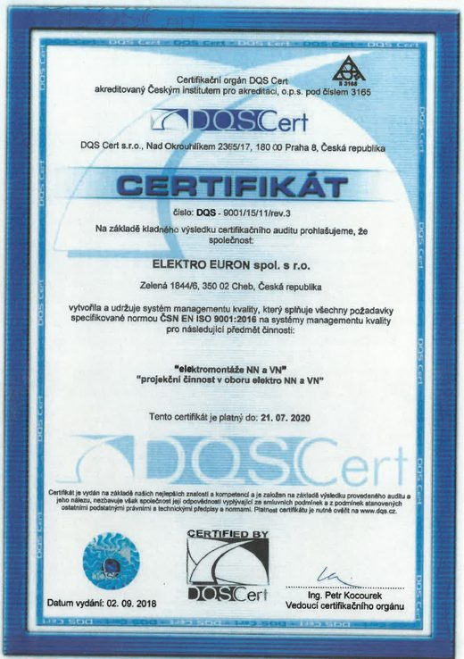
Systém managementu kvality.
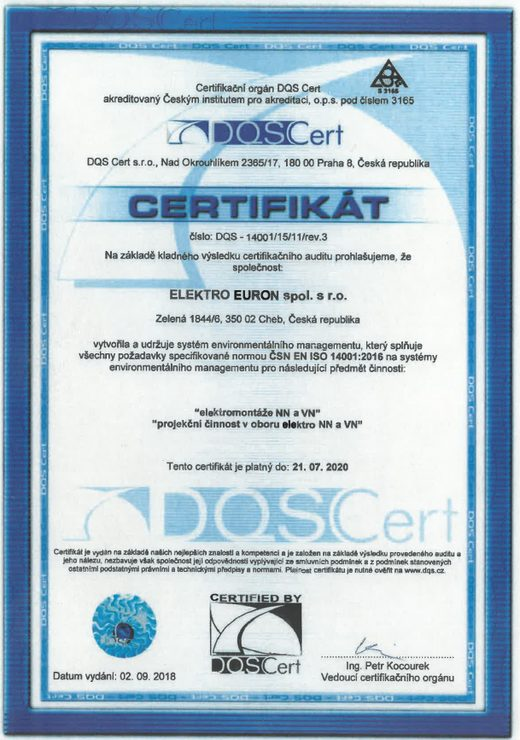
Systém environmentálního managementu.
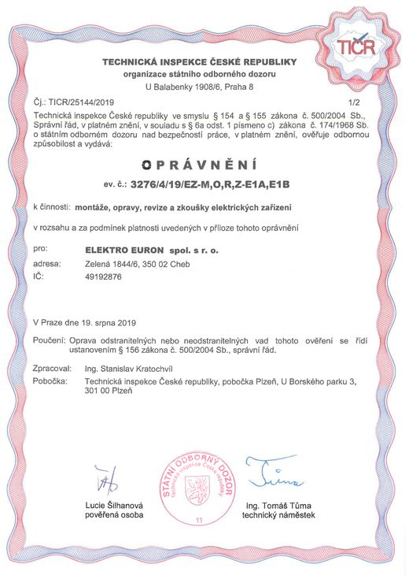
Montáže, opravy, revize a zkoušky elektrických zařízení bez omezení napětí, včetně hromosvodů — i v prostředí s nebezpečím výbuchu (E1A, E1B).
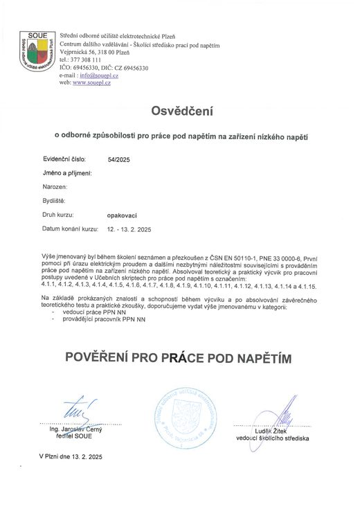
Osvědčení o odborné způsobilosti podle ČSN EN 50110-1 a PNE 33 0000-6 — vedoucí práce i provádějící pracovník PPN NN.
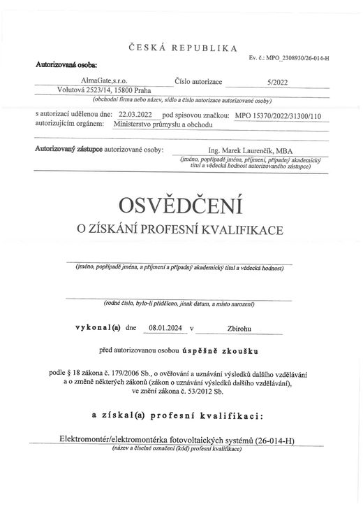
Osvědčení o získání profesní kvalifikace 26-014-H podle zákona č. 179/2006 Sb.
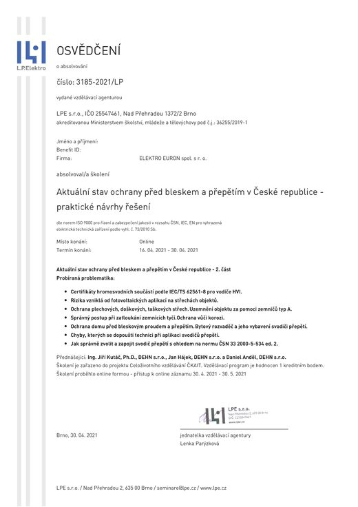
Akreditované školení k aktuálnímu stavu ochrany před bleskem a přepětím v ČR, zařazené do celoživotního vzdělávání ČKAIT.
Montáž, servis, uvedení do provozu a kontrola provozuschopnosti podle vyhlášky č. 246/2001 Sb.
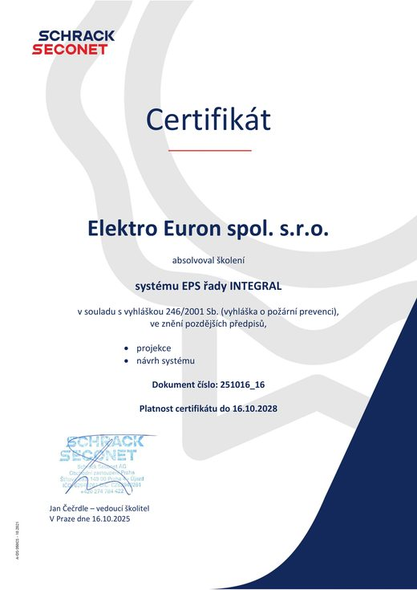
Projekce a návrh systému elektrické požární signalizace.
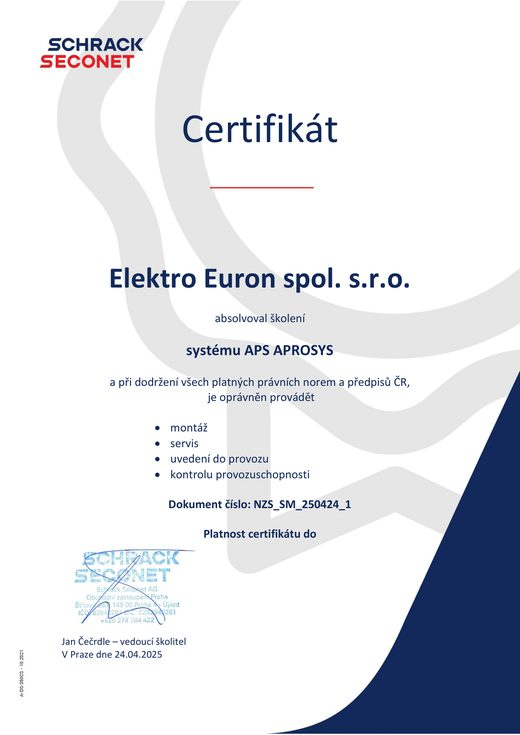
Montáž, servis, uvedení do provozu a kontrola provozuschopnosti.
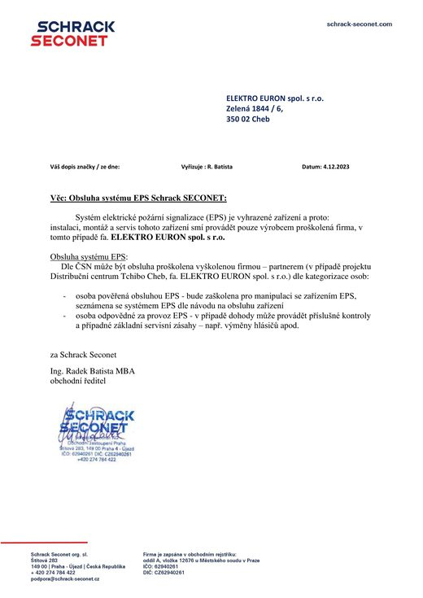
Instalaci, montáž a servis EPS smí provádět pouze výrobcem proškolená firma. Elektro Euron takovou firmou je.
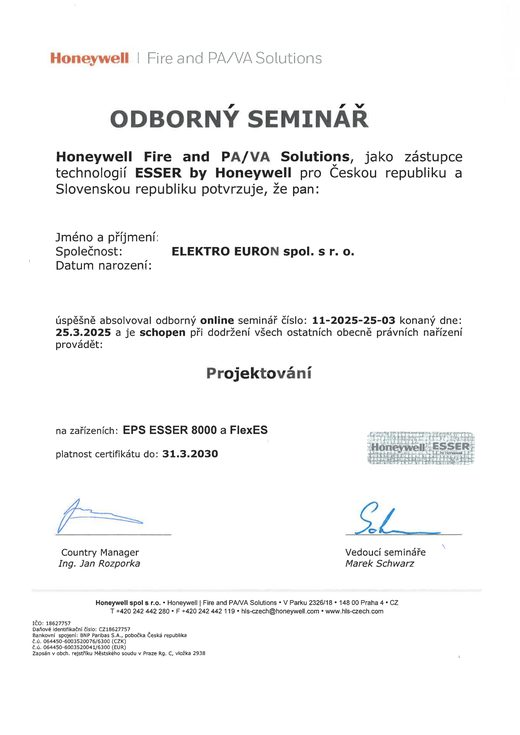
Projektování systémů EPS ESSER 8000 a FlexES.
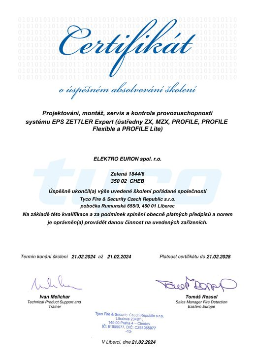
Projektování, montáž, servis a kontrola provozuschopnosti — ústředny ZX, MZX, PROFILE, PROFILE Flexible a PROFILE Lite.
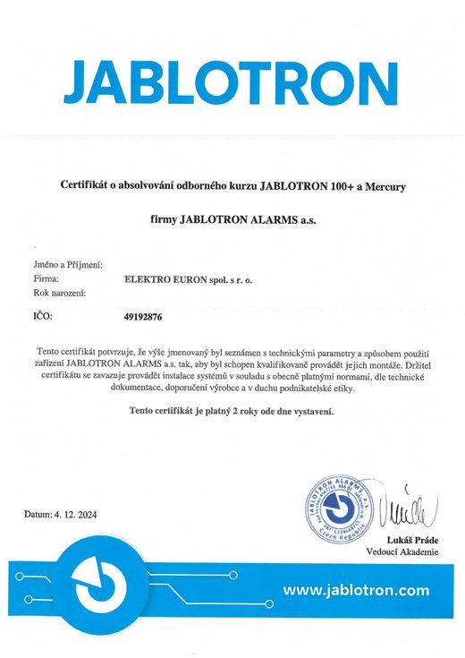
Odborný kurz montáže zabezpečovacích systémů Jablotron.
Výkonná ředitelka, prokurista · +420 723 966 741
Vedoucí realizace · +420 733 641 628